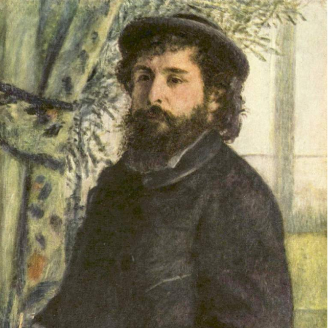

Claude Monet
1840.11.14 ~ 1926.12.5
French Impressionist painter, a pioneer and leader of Impressionism. In 1874, he held the first Impressionist exhibition together with his fellow painters. poured out In particular, Monet's 〈Impression, Sunrise〉 was criticized the most, and the term 'Impressionist' comes from booing Monet's work.
